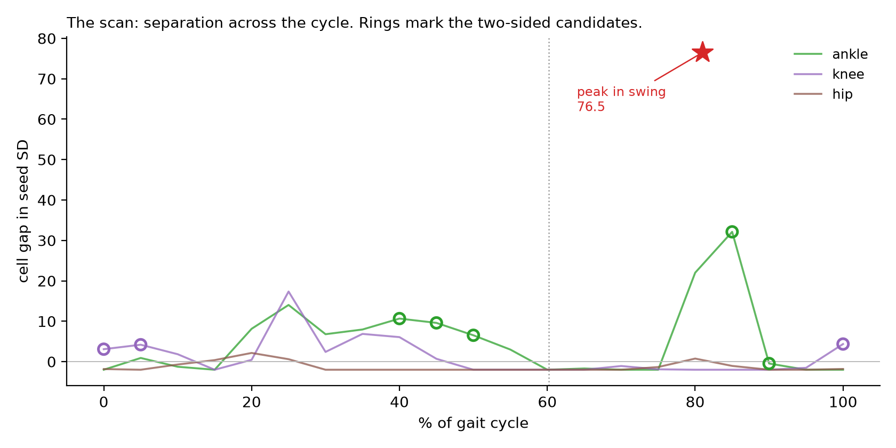
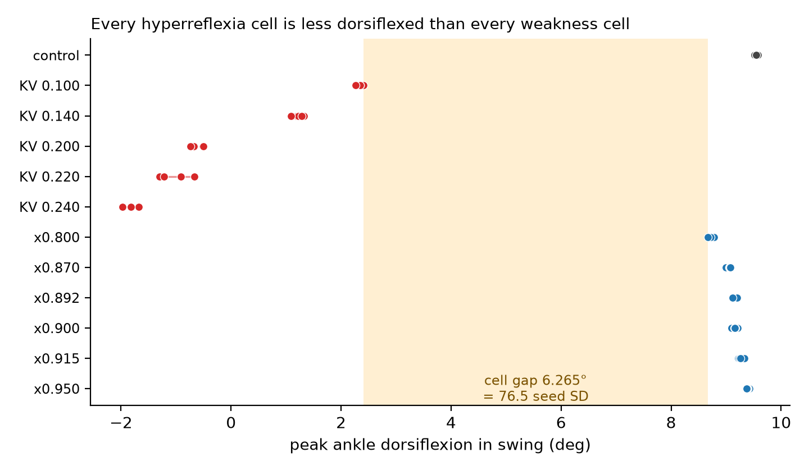
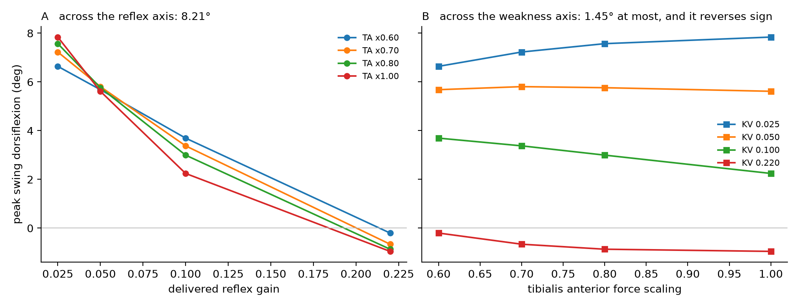
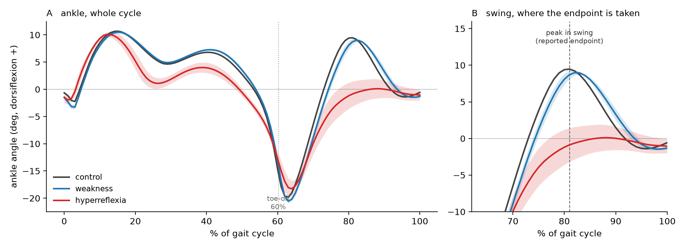
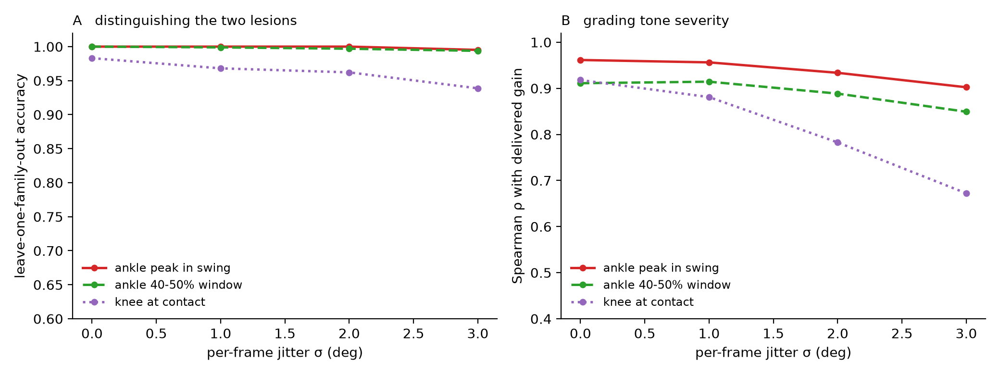

Manuscript in preparation
A search over 81 sagittal kinematic variables — and the reason only one of the two lesions can be graded from any of them.
Mu-Hua Wang · Hui-Ting Shih
National Yang Ming Chiao Tung University
Every statistic on this page is produced by a script in that deposit and stored in a JSON container alongside it. The raw simulation output is not deposited there, and the licence under which it was produced expired on 27 August 2026, so none of it can be re-simulated.
One gait cycle from each condition (10 s, no sound). This is the archived model itself: the bone meshes it was built from, posed by its own recorded body poses, with its own muscle paths shaded by their recorded activation. Joint centres are solved from the rigid-body constraint that a joint is fixed in both bodies it connects, closure residual 0.3 mm; the only approximation in the drawing is that each bone's silhouette is taken in its own sagittal plane and not re-projected for out-of-plane rotation. The left leg is lesioned and the camera follows the pelvis. The separation is about seven degrees, which is small at whole-body scale, so it is also shown magnified with the shank held vertical — what remains there is the ankle angle alone — and as all three traces on one axis. Nothing is exaggerated; the only magnified panel is the one that says so. These are single cycles of a single seed, not the group means reported below, and the hyperreflexia run falls later in the simulation than the cycle shown. Read the two lesions against each other rather than against normality: the control's swing peak sits outside the normal adult range of 0–5° and the hyperreflexia model's sits inside it.
Post-stroke equinovarus has two opposite causes. Calf muscles that are over-active call for botulinum toxin. Dorsiflexors that are weak call for an orthosis or a tendon transfer. Telling them apart currently requires an invasive diagnostic nerve block.
The question: is there any angle in the gait record that could stand in for it?
In a 19-DoF, 22-muscle 3D musculoskeletal model, each lesion is imposed separately and the controller re-optimised after every imposition — so both lesion magnitudes are known, which is never true in a patient. Then, rather than assuming an endpoint, all three joints across the whole gait cycle are scanned: 81 candidate variables.
The direction is not new. Jansen et al. 2014 already reported reduced swing dorsiflexion, and already noted that the literature attributes the deficit to tibialis anterior weakness without specifically considering hyperreflexia. What is new here is measuring its size against a weakness arm of independently known depth.

Cell-level gap, in units of each candidate's own within-condition seed SD, for the knee, ankle and hip sampled at every five per cent of the gait cycle. Rings mark the candidates that are also two-sided. The star is the reported endpoint, plotted at its mean phase because it is a landmark rather than a fixed phase. This figure is the selection: the reported endpoint is its maximum, and every figure derived from that choice is an upper estimate.

Peak ankle dorsiflexion in swing, cell by cell, with the control chain at the top and the two lesion series below. Each point is one optimisation seed. The shaded band is the run-level gap. Note that the weakness series sits 0.43° from control while the hyperreflexia series sits 9.16° from it, on the same side — the two lesions stand unequally far from normal, not on opposite sides of it.
Peak swing dorsiflexion separates the two lesions with no overlap at all. That gap is 76.5× the variable's own seed noise and 175× the measured protocol artefact.
Re-run with variable selection inside each fold, 11 folds selected the same variable — still 59/59.
Across five gain levels. Perfect rank agreement with the tone lesion's depth.
Still separates the two lesions at simulated motion-capture noise. Knee angle at contact manages 0.939.
They show falling early is not sufficient to produce the signal. That is not the same as showing falling contributes nothing.
| Control | Lesion | tend | Swing ankle | Distance from control |
|---|---|---|---|---|
| 17 runs | Plantarflexor weakness | 9.93–17.56 s | 9.572° | +0.017° |
| 5 runs | Hamstring weakness ×0.60 | 6.46–9.03 s | 9.470° | −0.086° |
The second matters most: the hamstrings cross the hip and the knee but not the ankle, and these runs fall earlier than any hyperreflexia run — yet they read as normal on this landmark.

A: peak swing dorsiflexion against delivered reflex gain, one line per tibialis anterior scaling — the lines move together and span 8.21°. B: the same values against tibialis anterior scaling, one line per gain — the lines are nearly flat, span at most 1.45° within any gain column, and change direction across the gain range. The contrast between the two panels is the paper's principal result.
Of the 81 candidates, 14 to 28 can usably grade tone. Only 1 to 7 can grade weakness.
The range comes from nine combinations: three published measurement-error thresholds crossed with three rank-correlation conventions. The ratio lies between 3.7 and 14, and never inverts.
That upper bound holds only for those nine combinations. Sweeping common thresholds instead, weakness drops to zero above 3° and the ratio has no upper bound.
Hold the reflex gain fixed and vary only tibialis anterior force. Whether weakening the dorsiflexors makes swing dorsiflexion larger or smaller depends on how hard the plantarflexors are pulling.
| Delivered gain KV | ρ | Span |
|---|---|---|
| 0.025 | +1.000 | 1.201° |
| 0.050 | −0.400 | 0.191° |
| 0.100 | −1.000 | 1.449° |
| 0.220 | −1.000 | 0.753° |
An estimator that does not already know the tone level cannot use a signal whose sign it cannot predict. That is why the leave-one-weakness-level-out R² is negative for all four feature sets — worse than simply reporting the mean.
This result does not depend on the endpoint choice, and does not depend on how human-like the model is. What it says is that no single sagittal angle can carry a second quantity.
Moving from knee angle at contact to peak swing ankle dorsiflexion.
Using a variable a gait laboratory already records.
Both are scaled by a between-patient SD of 5.55°, which was reconstructed from two subgroup means and SDs in a 34-person cohort — the original paper does not report it — and that cohort had already excluded 67 of 116 screened patients because they used an orthosis or a walking aid. These are not numbers to take to a patient.
The honest summary: half of the assignment problem can be answered from gait. The other half has to be answered by measuring strength.
Selected after seeing the data. Every number derived from that choice is stated as an upper bound.
Together with the reason they were withdrawn, rather than being quietly deleted.
The version that actually ran cannot be recovered, and hash verification would not have caught it. The paper reports this itself.
r = −0.32, p = 0.039, n = 55 — written into Limitations rather than left out.
So any reviewer request for additional simulation cannot be executed. Stated up front.
The unlesioned model shows non-physiological stance features — it dorsiflexes to +10.7° by 15 % of the cycle, where a normal ankle is near neutral — so those variables are excluded rather than used.

Ankle angle over the gait cycle for the three groups. A the whole cycle; B swing, where the reported endpoint is taken. Bands are ±1 SD across seeds of the pooled group, not across subjects. Dorsiflexion is positive; the dotted line marks mean toe-off at 59.5 % of the cycle. Read the two lesion groups against each other, not against normality: in this model the unlesioned control's swing peak (9.56°) sits outside the normal adult range of 0–5°, while the hyperreflexia group (0.39°) sits inside it. The two groups separate cleanly, but both are mis-sited relative to a real ankle.

What a simulated motion-capture error leaves of two of the three claims. A leave-one-condition-out accuracy in distinguishing the two lesions; B Spearman correlation between the reading and delivered reflex gain. The horizontal axis is per-frame Gaussian jitter at 100 Hz with yaw ≤ 10° and event error ≤ 1 frame. The third claim, grading weakness, is not plotted because it does not rise above chance at any noise level. These are simulation resolutions and contain no between-patient variance.